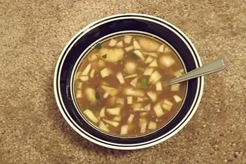

Chutneys, pickles & raitas · Popular in South India
Ugadi pachadi
Ugadi pachadi is made with wild neem flowers, mango, tamarind, a favourite in South India.

How do you make ugadi pachadi?
Neem flowers, raw mango, tamarind, jaggery, salt and chilli: six tastes in one spoonful for the new year.
Wild ingredients
- Neem flowers (Azadirachta indica): in season March to April
- Wild mango (Mangifera indica): in season April to June
- Tamarind (Tamarindus indica): in season January to April
Watch the recipe

Video: Vismai Food on YouTube